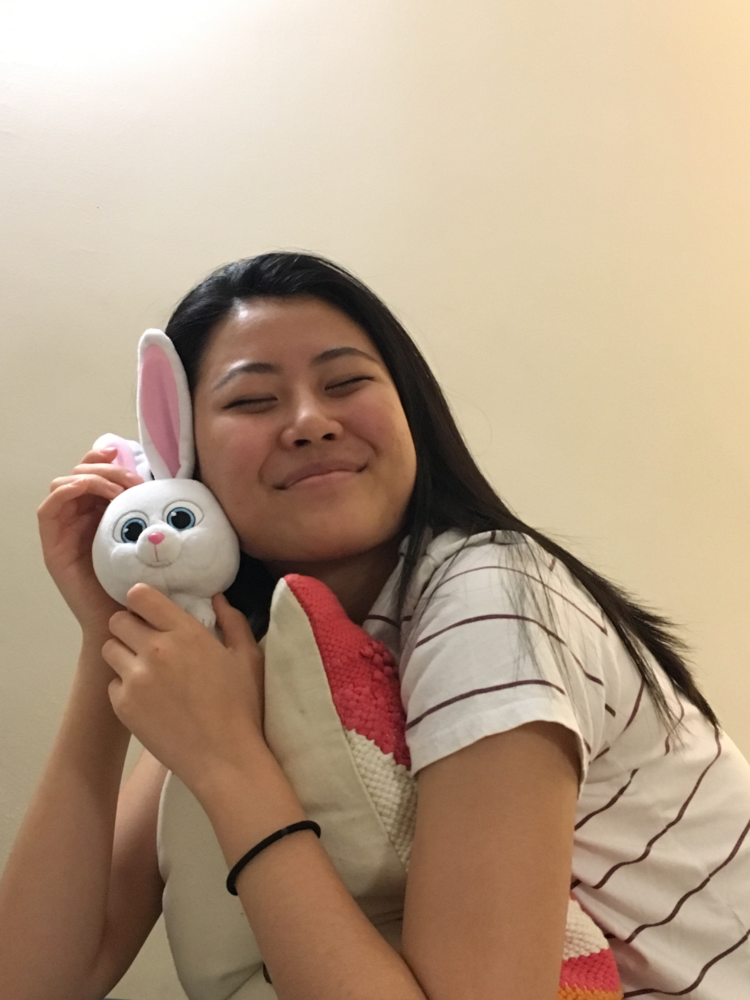
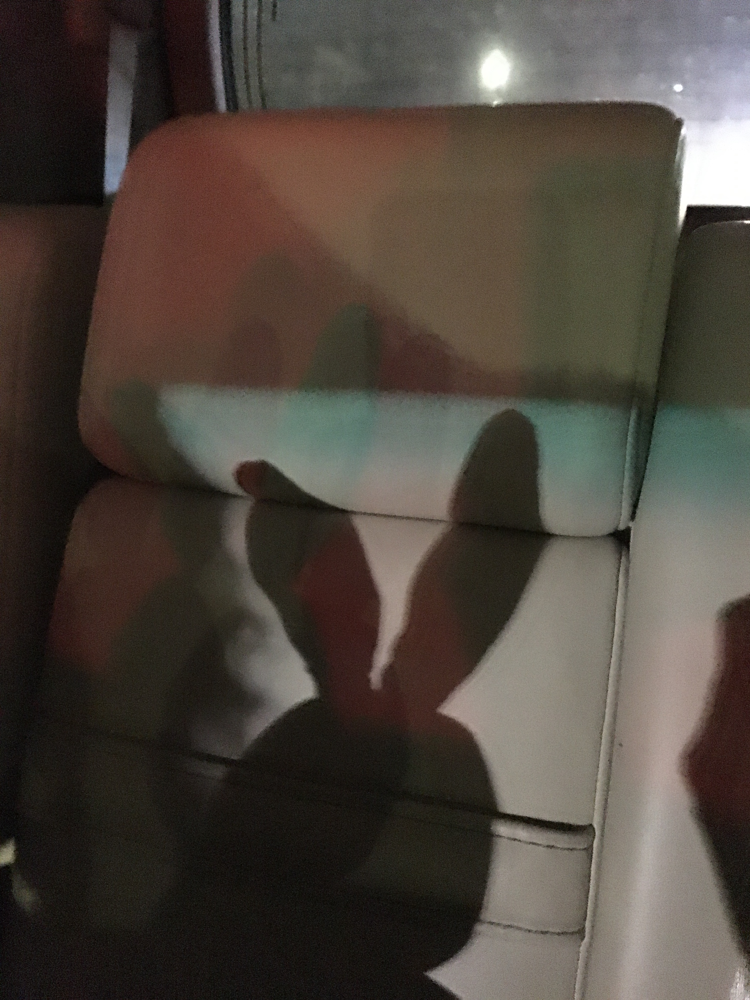
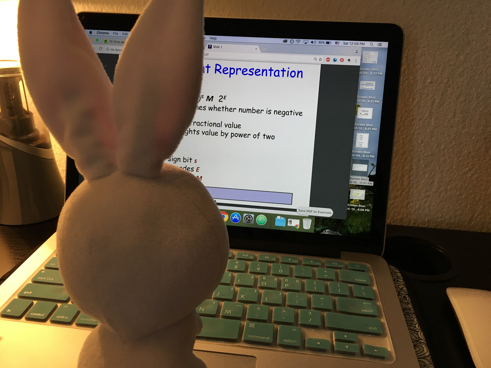
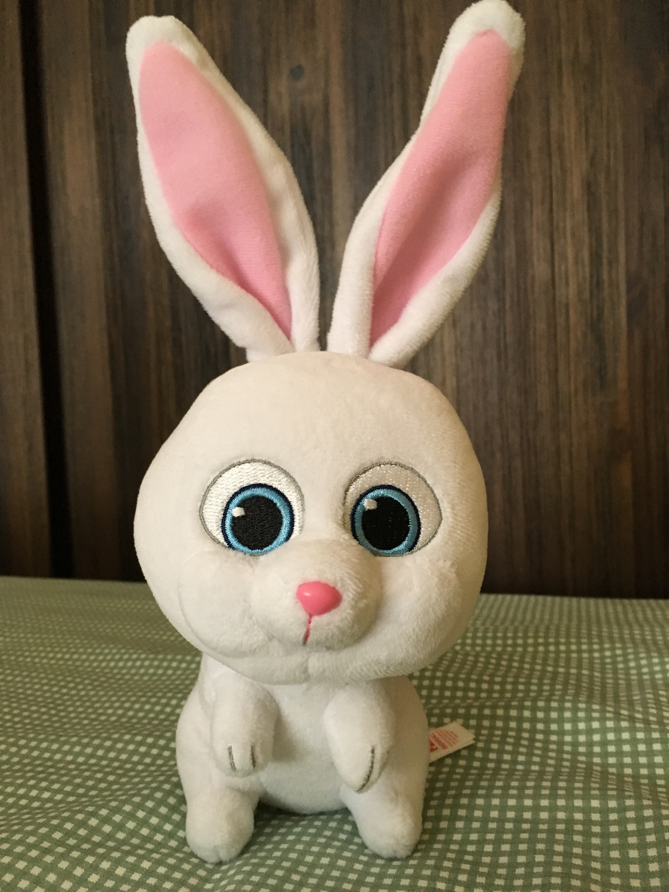
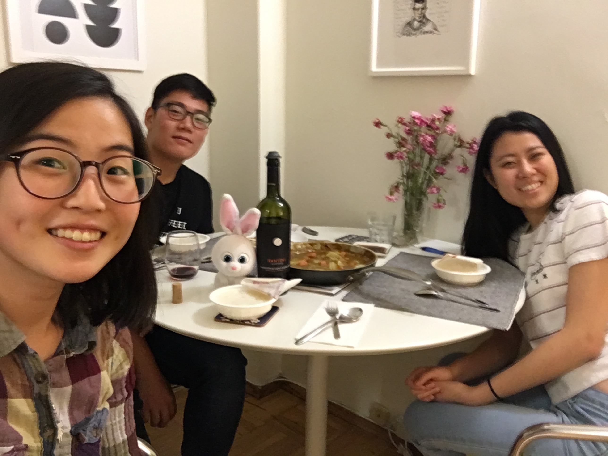

  
 
Mini Bun is a bunny currently residing in New York City with Jane Choe. Mini Bun’s best qualities are her empathy, her attentiveness, and her never-ending energy. She was a high jumper at BU (Bunny University), but currently works as a zoology research assistant. In her free time, Mini Bun likes to dance, hop, watch Netflix, and help Jane study.
Her favorite dish is carrots marinated with basil and thyme. Her closest friends are Jane, Adnan, Sally, and Felix. She received one vote during the presidential election of 2016. Mini Bun is grateful to everyone who visits her website!